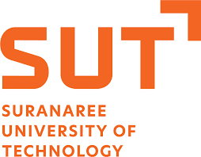

Education
Suranaree University of Technology
Major: Digital Technology Security & Cloud Technology. Relevant focus includes cyber security, system administration, network administration, blockchain, software testing, and cloud management.